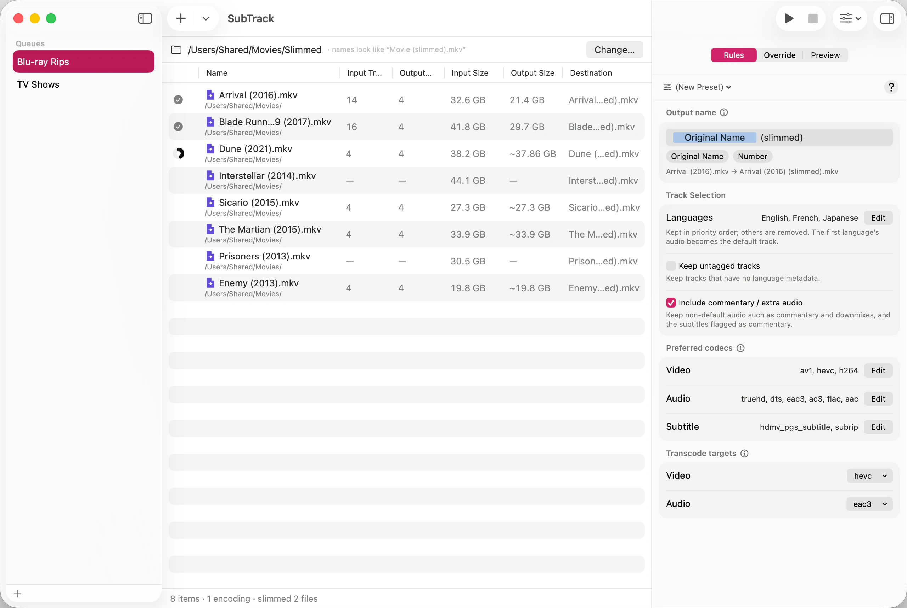

Un remux Blu-ray ou UHD contient souvent une douzaine de pistes : huit doublages dans des langues que vous ne parlez pas, cinq langues de sous-titres que vous ne lisez pas et une piste de commentaires que vous n’écouterez jamais. Elles occupent l’essentiel de l’espace et n’apportent rien.
SubTrack les retire. Tout ce que vous conservez est écrit tel quel dans un nouveau fichier, qui ne représente plus qu’une fraction de la taille d’origine, pour une qualité identique.

La plupart des outils vidéo décodent chaque image, puis l’encodent de nouveau. Cela prend des heures et coûte de la qualité à chaque fois, car l’image est jetée puis approximée à nouveau.
SubTrack ne décode rien. Une piste que vous conservez est copiée d’un conteneur dans un autre, octet par octet : ce sont les mêmes données compressées, simplement déplacées. Il n’y a aucune perte de génération puisque rien n’est régénéré, et la vitesse dépend de celle de lecture de votre disque, pas de la puissance de votre processeur. Un film de deux heures est généralement traité en quelques secondes.
Le conteneur reste lui aussi le même. Un MKV en entrée donne un MKV en sortie : tout ce qui lit votre original lira aussi la copie allégée.
SubTrack allège les pistes, il ne transcode pas. Il n’y a ni curseur de qualité, ni champ de débit, ni préréglage d’encodeur, car en utilisation normale il n’y a rien à ajuster : la copie n’a aucun réglage.
SubTrack convertit bel et bien une piste, mais dans un seul cas : vous avez demandé à conserver une piste qui utilise un codec dont vous ne voulez pas. Cette piste est alors convertie, les autres sont toujours copiées, et SubTrack vous en informe avant de démarrer. Pour en savoir plus, consultez Définir les codecs préférés et les codecs cibles.
Si vous voulez réduire la taille de l’image, c’est-à-dire réencoder une médiathèque avec un débit plus faible, SubTrack n’est pas l’outil qu’il vous faut, et ne le sera jamais. HandBrake est fait pour cela.